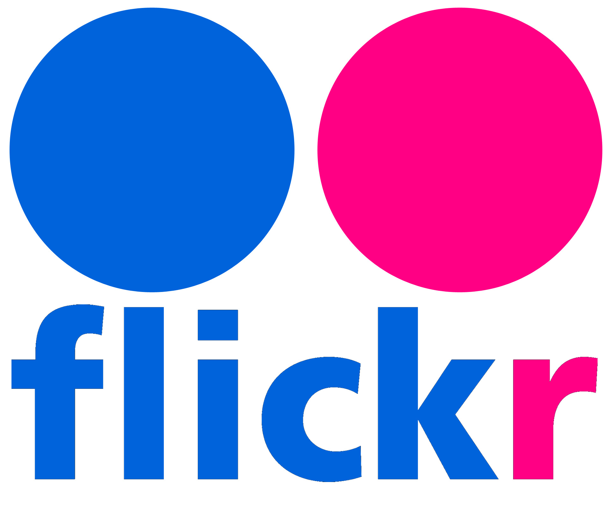
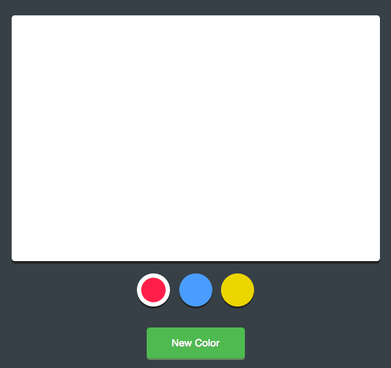
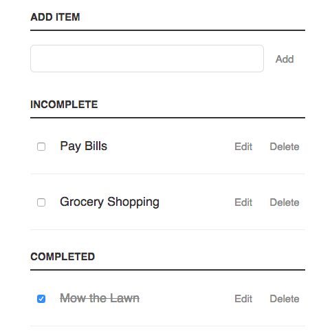

Thanks for visiting my portfolio site.
Feel free to look around. Below are some projects I have worked on. Click on a project to open it in a new tab.
-

Application to determine a lunch suggestion based upon voting by participants using multiple options provided by user(s). The application uses the Google API to provide location data and restaurant information as parameters for the user selection. This was the final group project while at CodeFellows.
-
This app makes use of the Trimet Developer API to display arrival info for the stop ID entered by the user. This was a project developed while at CodeFellows.
-
A simulated VooDoo Donuts page using arbitrary data to determine how many donuts each location should bake throughout the day. This was a project developed while at CodeFellows.
-

A photo search application that searches Flickr for photos and displays thumbnails of the images on a web page using AJAX and jQuery. This was developed as part of the Treehouse curriculum.
-

A drawing application utilizing mouse events with jQuery and the HTML5 canvas element. This was developed as part of the Treehouse curriculum.
-

To Do List app that was developed using Vanilla JavaScript without any 3rd party libraries. It provided good practice traversing and manipulating the DOM and adding event handlers. This was developed as part of the Treehouse curriculum.